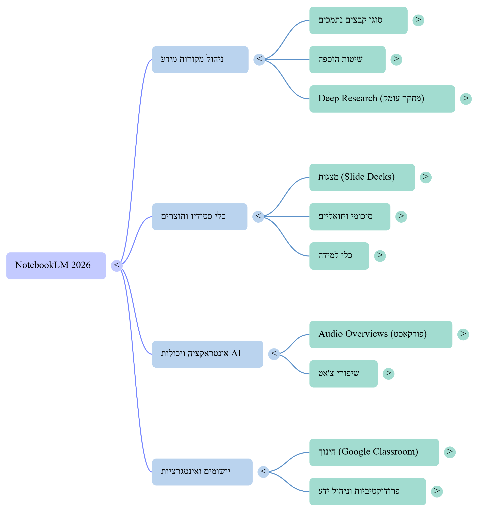
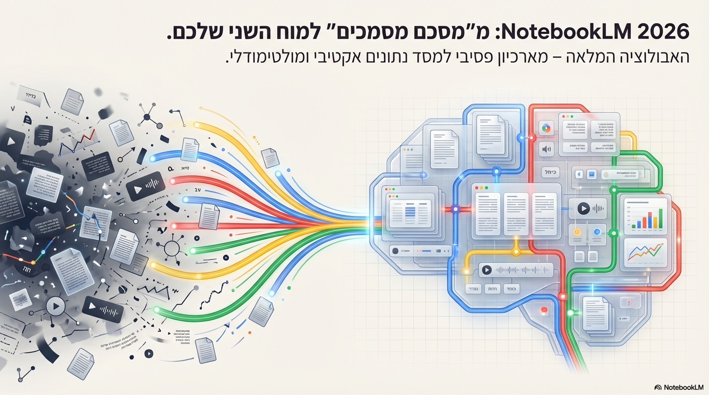

NotebookLM
המחברת החכמה של Google שהופכת מסמכים לידע פעיל
סיכומים, פודקאסטים, אינפוגרפיקות ומצגות — בלחיצה
סיכומים, פודקאסטים, אינפוגרפיקות ומצגות — בלחיצה
Learni | הדרכה קצרה שתשנה לכם את העבודה
1
מה זה NotebookLM2
איך עובדים3
יתרונות ומגבלות4
התהליך הנכוןמה זה NotebookLM?
יש לכם 50 מסמכים ואין זמן לקרוא — NotebookLM קורא בשבילכם.
Deep Research (מחקר עמוק)
מנוע שמנתח את המסמכים שלכם ומחפש תשובות מדויקות
המודל החכם של Google
רץ על Gemini, המודל המתקדם של Google, עם יכולת לעבד מאות אלפי מילים בבת אחת
תוצרים מוכנים
אינפוגרפיקות, מצגות, פודקאסטים, טבלאות וכרטיסיות לימוד — מהמסמכים שלכם
חינמי לגמרי! NotebookLM זמין בחינם עם חשבון Google. יש גם מנוי Plus ו-AI Ultra עם יכולות נוספות.
איך מתחילים?
3 שלבים ואתם בפנים
1
נכנסים ל-NotebookLM
גולשים ל-notebooklm.google.com ומתחברים עם חשבון Google
2
יוצרים מחברת חדשה
לוחצים על "New Notebook" ונותנים שם — למשל "סיכום מאמרים לפרויקט"
3
מעלים מקורות
PDF, Google Docs, אתרים, YouTube, EPUB, Sheets ואפילו תמונות — הכל נכנס
אפשר לחבר Google Drive — המסמכים מסתנכרנים אוטומטית ותמיד מעודכנים.
2
איך עובדים עם NotebookLM?
4 דרכים להפוך מסמכים לידע שימושי
שאלו שאלות — קבלו תשובות עם מקורות
כמו עוזר אישי שקרא את כל המסמכים שלכם
1
שאלה בשפה חופשית
כותבים שאלה כמו "מה הממצאים העיקריים בדוח?" — בעברית או באנגלית
2
תשובה עם ציטוטים
NotebookLM מחזיר תשובה מדויקת עם הפניה למקור — לוחצים ורואים בדיוק מאיפה המידע
3
מחקר עמוק (Deep Research)
מנוע שמחפש חיבורים בין מקורות שונים ובונה תמונה שלמה
שליטה ברמת הפירוט: בוחרים Concise (קצר) / Standard (רגיל) / Detailed (מפורט) — או כותבים הוראה חופשית.
יצירת תוצרים — מהמסמכים שלכם לתוצר מוכן
NotebookLM הופך מסמכים למגוון פורמטים — ללמידה, להצגה ולעבודה
מצגות PPTX
ייצוא מצגת לעריכה + תיקון שקף-שקף
אינפוגרפיקה
10 סגנונות — סקיצה, מקצועי, אנימה ועוד
סקירה קולית
פודקאסט עם שני מגישים מהמסמכים
כרטיסי עזר ובוחן
Flashcards וחידונים עם מעקב התקדמות
דוחות וסיכומים
סיכום מסודר בפורמט מסמך מוכן
טבלת נתונים ומפת חשיבה
פלט טבלאי + מפה ויזואלית של קשרים
סטודיו
מצגת
סקירה קולית
מפת חשיבה
סרטון סקירה
כרטיסי עזר
דוחות
אינפוגרפיקה
בוחן
טבלת נתונים
9 סוגי תוצרים בלחיצה
אינפוגרפיקות בשלושה כיוונים: לרוחב (Landscape), לגובה (Portrait) או ריבוע (Square) — בוחרים לפי הצורך.
למידה חכמה — פודקאסט, שיחה והנוטבוק כמקור ידע
NotebookLM לא רק עונה — הוא מלמד אתכם את החומר
1
פודקאסט אוטומטי
NotebookLM יוצר שיחה טבעית בין שני מגישים שמסבירים את המסמכים שלכם — מושלם להאזנה בנסיעה
2
הצטרפות לשיחה בלייב
אפשר להיכנס לשיחה בזמן אמת — לשאול שאלות ולכוון את הדיון לנושאים שמעניינים אתכם
3
המחברת כמקור למידה אישי
הנוטבוק הופך לבסיס ידע חי — שואלים שאלות, מקבלים סיכומים, כרטיסיות וחידונים. כאילו מורה פרטי שקרא הכל
AI Ultra (249$/חודש): סרטונים קולנועיים (Cinematic Video Overviews) עם Veo 3 — כרגע באנגלית בלבד.
חיבורים ואינטגרציות
NotebookLM עובד יחד עם הכלים שכבר מכירים
Google Drive
חיבור ישיר — מסמכים מסונכרנים ותמיד מעודכנים
שיתוף עם צוות
שיתוף מחברות עם עמיתים, Google Classroom לכיתות, או קישור ישיר
נוטבוק כמקור ב-Gemini
שואלים את Gemini שאלה ומקבלים תשובות מהנוטבוק שלכם
מקורות מגוונים
PDF, EPUB, Google Sheets, YouTube, תמונות ואתרים — הכל נכנס למחברת
מה חדש ב-NotebookLM? שדרוגים של 2026
הכלי השתדרג משמעותית — הנה מה שהתווסף לאחרונה
מרץ 2026
העדכון הגדול
10 סגנונות אינפוגרפיקה
סקיצה, מקצועי, אנימה, רשת ועוד
סקיצה, מקצועי, אנימה, רשת ועוד
ייצוא מצגות PPTX
מצגות שאפשר לערוך + תיקון שקף-שקף
מצגות שאפשר לערוך + תיקון שקף-שקף
סרטונים קולנועיים
Video Overviews עם Veo 3 (AI Ultra)
Video Overviews עם Veo 3 (AI Ultra)
ינואר 2026
נוטבוק כמקור ב-Gemini — שואלים את Gemini ומקבלים תשובות מהמחברת שלכם
פברואר 2026
התאמה אישית במובייל — ממשק חדש, עריכה ישירה מהטלפון
חלון הקשר גדל פי 8! מיליון טוקנים (מאות אלפי מילים) — עכשיו אפשר להעלות ספרים שלמים ומסמכים ענקיים.
3
יתרונות ומגבלות
מה מעולה ומה כדאי לדעת לפני שמתחילים
יתרונות ומגבלות של NotebookLM
מה מעולה ומה צריך לדעת
יתרונות
חינמי לגמרי — עם חשבון Google, בלי כרטיס אשראי
מקורות מדויקים — כל תשובה מפנה לציטוט המדויק במסמך
תוצרים מגוונים — מצגות, אינפוגרפיקות, פודקאסטים, כרטיסיות
קל לשימוש — אין צורך בידע טכני, ממשק פשוט ואינטואיטיבי
חוסך זמן — סיכום 50 עמודים ב-30 שניות
מגבלות ופתרונות
עברית חלקית בפודקאסטים
אינפוגרפיקות ומצגות עובדות מעולה בעברית
לא יוצר תוכן מאפס
צריך מקורות — הכלי מעבד, לא ממציא
מצגות PPTX בסיסיות בעיצוב
מייצאים ומשפרים ב-PowerPoint / Canva
סרטונים רק ב-AI Ultra (249$/חודש)
כל שאר הפיצ'רים זמינים בחינם
מתי NotebookLM ומתי ChatGPT?
ChatGPT / Gemini Chat
יצירת תוכן מאפס — מאמרים, מיילים, קופי
brainstorming ורעיונות חדשים
ידע כללי ומענה על שאלות כלליות
לא מצטט מקורות מדויקים מהמסמכים שלכם
NotebookLM
עונה רק מהמסמכים שלכם — מדויק ואמין
כל תשובה עם ציטוט מדויק מהמקור
מקורות קבועים במחברת מסודרת
פודקאסטים, אינפוגרפיקות, מצגות וכרטיסיות
Claude Code + NotebookLM — שליטה מלאה מהטרמינל
חיבור דרך NotebookLM-py — כל היכולות של NotebookLM, ישר מ-Claude Code
1
חיבור דרך NotebookLM-py
Claude Code מתחבר ל-NotebookLM דרך ספריית Python קהילתית (לא רשמית של Google) — יוצר מחברות, מעלה מקורות ומבקש תוצרים
2
מבקשים מ-Claude Code כל מה ש-NotebookLM יודע לעשות
"תיצור אינפוגרפיקה מ-5 המאמרים", "תייצר פודקאסט מהדוחות", "תעשה סיכום טבלאי" — הכל בפקודה אחת
3
תוצרים מוכנים בלי לפתוח דפדפן
אינפוגרפיקות, מצגות, סיכומים ופודקאסטים נוצרים אוטומטית — Claude Code מטפל בכל התהליך
Claude Code
"תיצור מחברת עם המאמרים האלה ותעשה אינפוגרפיקה"
NotebookLM
מעבד, מסכם, יוצר תוצרים — הכל אוטומטי
אין לכם Claude Code? אפשר לעשות הכל ידנית דרך אתר NotebookLM — אותן תוצאות, רק בלחיצות במקום פקודות.
רוצים ללמוד על Claude Code? למצגת ההדרכה
רוצים ללמוד על Claude Code? למצגת ההדרכה
תרחישים מהחיים
מצבים שכולם מכירים — ואיך NotebookLM פותר אותם
30 דוחות על השולחן ואין זמן לקרוא
מעלים את כל הדוחות ומקבלים סיכום מדויק עם הממצאים העיקריים ומה שדורש התייחסות
3 דקות
צריך מחקר שוק לפני פגישה עם משקיע
מעלים 5 דוחות על השוק, NotebookLM בונה סיכום ממוקד עם נתונים מדויקים + מצגת draft
5 דקות
הצוות רוצה סיכום של כל מה שנעשה
מעלים פרוטוקולים ומסמכי עבודה, יוצרים אינפוגרפיקה מסכמת או טבלת השוואה מסודרת
4 דקות
גם לשיווק: מעלים 10 דוחות מתחרים, מקבלים ניתוח השוואתי מסודר עם הממצאים העיקריים — ב-5 דקות במקום יומיים.
דוגמאות תוצרים
תוצרים שנוצרו ב-NotebookLM — ישר מהמסמכים

אינפוגרפיקה — Professional
לחצו להגדלה

אינפוגרפיקה — ויזואלי AI
לחצו להגדלה

מפת חשיבה — Mind Map
לחצו להגדלה

מצגת PPTX — 12 שקפים
לחצו להגדלה
סרטון קולנועי
באנגלית | AI Ultra
כל התוצרים האלה נוצרו אוטומטית — מתוך אותם מסמכים, בלחיצה אחת בסטודיו של NotebookLM.
טיפים לשימוש חכם
הדברים שהופכים אתכם מלמתחילים למשתמשים מנוסים
מקורות איכותיים = תוצרים איכותיים
NotebookLM טוב כמו המסמכים שמעלים לו. העלו מקורות מקצועיים ומפורטים — לא רק כותרות.
נסו את סגנון הסקיצה (Sketch Note)
מבין 10 הסגנונות, סקיצה ותצוגת רשת (Bento Grid) ה��י מתאימים להצגה בפני קהל.
חברו את Google Drive
במקום להעלות קבצים ידנית — חברו Drive ותמיד יהיו לכם המסמכים המעודכנים.
מניסיון: הפודקאסט שינה לי את ההתכוננות
אחרי חודש שימוש — הדבר הכי שווה הוא Audio Overview בנסיעה. מגיעים מוכנים בלי לשבת לקרוא.
שאלות ותשובות
השאלות שכולם שואלים לפני שמתחילים
כן! NotebookLM חינמי עם חשבון Google וכולל את כל הפיצ'רים המרכזיים. יש מנוי Plus (דרך Google AI Pro, כ-20$/חודש) עם יותר שימושים, ו-AI Ultra (249$/חודש) עם סרטונים קולנועיים. רוב המשתמשים לא צריכים יותר מהחינמי.
בחלק גדול כן. שאלות ותשובות, אינפוגרפיקות ומצגות עובדים מצוין בעברית. הפודקאסטים (Audio Overview) כרגע בעיקר באנגלית.
5 דקות להתחלה. מעלים קובץ, שואלים שאלה — וזהו. ככל שמשתמשים יותר, מגלים עוד אפשרויות. אין עקומת למידה תלולה.
לא מחליף — משלים. ChatGPT טוב ליצירת תוכן מאפס. NotebookLM טוב לעבודה עם מסמכים קיימים. הם עובדים מצוין יחד.
Google מצהירה שהמסמכים שלכם לא משמשים לאימון מודלים. הנתונים נשארים בחשבון Google שלכם. לארגונים יש גם אפשרות לגרסת Workspace עם הגנות נוספות.
כן! אפשר לשתף מחברת עם עמיתים בקישור, לשלב עם Google Classroom לכיתות, או פשוט לייצא את התוצרים ולשלוח.
תורכם לנסות!
5 דקות ויש לכם תוצר ראשון
המשימה שלכם
1
היכנסו ל-notebooklm.google.com
2
צרו מחברת חדשה ותנו שם — למשל "ניסיון ראשון"
3
העלו 2-3 מסמכים שיש לכם — דוחות עבודה, מאמרים, פרוטוקולים, או הדביקו קישור לאתר
4
שאלו שאלה על המסמכים — ותראו איך NotebookLM עונה עם מקורות
5
נסו ליצור אינפוגרפיקה או Audio Overview — בחרו סגנון שמתאים לכם
התוצר שיהיה לכם בסוף
מחברת חכמה עם אינפוגרפיקה או פודקאסט מוכן
נתקעתם? רוצים עזרה? שלחו הודעה בקבוצת הוואטסאפ.
ראיתם מה אפשר — ככה עושים את זה
5 שלבים ויש לכם תוצר מוכן
1
נכנסים
notebooklm.google.com
2
מעלים מקורות
PDF, Docs, YouTube, אתרים
3
שואלים
שאלות בשפה חופשית
4
יוצרים תוצר
אינפוגרפיקה, מצגת, פודקאסט
5
משתפים
מוכן לשליחה ושיתוף
לא מכירים את Claude Code? לחצו כאן — כלי שעוזר לאסוף מקורות ולהעלות אותם אוטומטית. אין לכם? אפשר גם ידנית.
סיכום
3 דברים לזכור מההדרכה
3 דברים לזכור
חינמי ומדויק
NotebookLM חינמי, עונה רק מהמסמכים שלכם, ותמיד מפנה למקור
תוצרים מוכנים
מצגות, אינפוגרפיקות, פודקאסטים וכרטיסיות — ישר מהמסמכים
חוסך שעות
מה שלקח שעתיים — לוקח 5 דקות. ומה שלא היה קורה בכלל — עכשיו קורה
התחילו קטן. מחברת אחת עם 2-3 מסמכים — תגלו כמה זה חוסך.
נסו בעצמכם
1
היכנסו ל-NotebookLM
notebooklm.google.com — חשבון Google ואתם בפנים
2
העלו מסמך ושאלו שאלה
תראו בעצמכם כמה זה מהיר ומדויק
נסו עכשיו — פשוט וקל
צרו מחברת, העלו 2-3 מסמכים, וצרו אינפוגרפיקה אחת.
רוצים עזרה? שלחו הודעה בקבוצה.
רוצים עזרה? שלחו הודעה בקבוצה.
רוצים לקבל טיפים והדרכות למייל?
הירשמו לתפוצה — עדכונים, כלים חדשים ורעיונות ליישום
נרשמתם בהצלחה!
לא נשתף את המייל שלכם. תוכלו להסיר בכל עת.